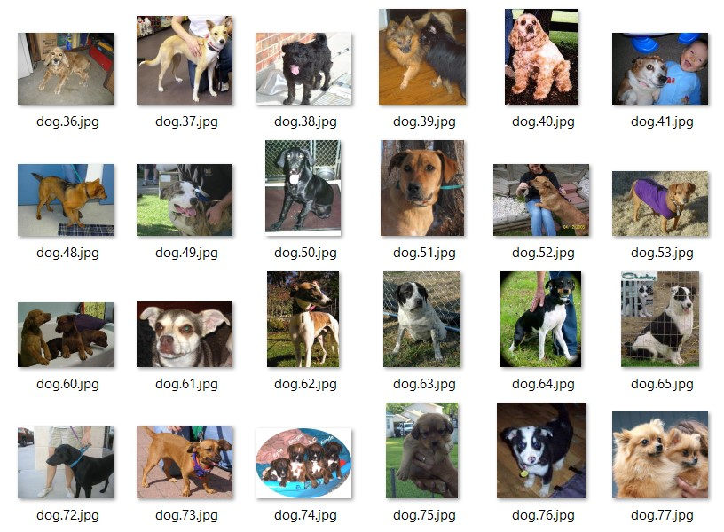
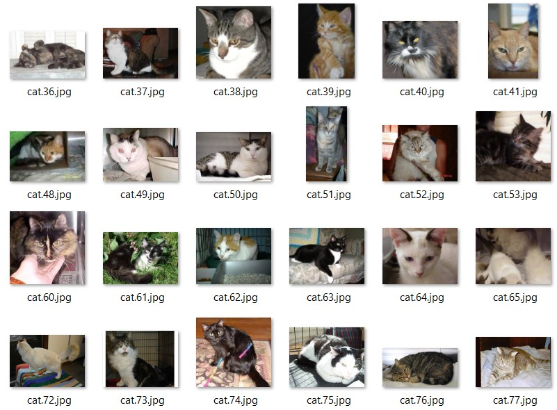
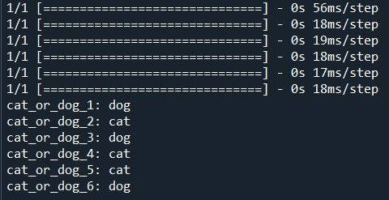

Overview
The code provided implements a Convolutional Neural Network (CNN) using the Keras library to solve a binary image classification problem, specifically to distinguish between images of cats and dogs. The goal is to build, train and evaluate a model that can analyze images and correctly predict to which class each image belongs (cat or dog).
This type of model is ideal for computer vision tasks, since CNNs are able to extract relevant patterns and features from images, such as edges, textures or shapes, to perform accurate classifications.
The code is divided into two main parts:
- Construction of the CNN: We will define the model architecture, which includes convolution layers, pooling, flattening and fully connected dense layers.
- Training and evaluation: We will prepare the training and test data, fit the model to the images and perform an example prediction.
Python Code and Analysis
Part 1: CNN Construction
Packages to be imported:
import numpy as np
from keras.models import Sequential
from keras.layers import Conv2D, MaxPooling2D, Flatten, Dense
import keras.utils as image
To initialize the convolutional neural network (CNN), we use an object of type Sequential as the main container of the layers that compose the architecture. This approach allows stacking the layers in a linear and ordered manner, facilitating the structured and efficient construction of the CNN according to the model requirements.
classifier = Sequential()
In the first step of building the convolutional neural network, a 2D convolution layer designed to extract significant features from the images, such as edges, textures or specific patterns, is incorporated. This layer uses 32 filters, a standard number that balances learning capability with computational complexity, allowing the detection of diverse local patterns. Each filter operates with a 3x3 pixel window, an optimal size to capture fine details without compromising the overall perspective of the image. In addition, a 64x64 pixel input shape with three channels (RGB) is defined, ensuring uniformity in image processing.
To introduce nonlinearity and facilitate the learning of complex patterns, the ReLU activation function is used, which activates only positive values, optimizing training efficiency. This convolution layer constitutes the core of the CNN, since it extracts essential features that serve as the basis for classification tasks.
# Step 1 - Convolution
"""It is not a standard layer like ANN, it is a convolution layer, so there will be differences.
- We use Conv2D method
- 32: feature detectors
- (3, 3): feature size 3x3. These are not such large windows that we lose sight of the global features of our network.
to lose sight of the global features of our neural network.
- input_shape: it is important to enter the size if the images especially if they are not square.
- input_shape parameters: number of rows, number of columns, number of color channels(depth of the image)
"""
classifier.add(Conv2D(filters = 32, kernel_size = (3, 3), input_shape = (64, 64, 3), activation = 'relu'))
In the second stage of the convolutional neural network construction, a max pooling layer designed to reduce the dimensionality of the feature maps generated in the convolution phase is integrated. This layer operates by selecting the maximum value within a 2x2 pixel window, decreasing the data resolution by half, i.e. from 64x64 to 32x32 pixels.
This process not only optimizes the computational cost by simplifying the data structure, but also minimizes the risk of overfitting by retaining only the most relevant features. In addition, the max pooling layer promotes model invariance to small variations, such as rotations, translations or changes in brightness, strengthening its ability to generalize. By reducing the number of nodes in the subsequent layers, the training process is significantly speeded up.
# Step 2 - Max Pooling
"""
The Max Pooling takes from the original image a window around which
we calculate the maximum of all the values inside that window
We have a large matrix and we take for example 2x2 matrices and we select the maximum value that falls inside each 2x2 matrix.
We get a double solution:
1) We reduce the dimension of the image
2) The feature maps will be smaller, reducing the amount of nodes that will be needed in the next step, simplifying the problems like what happens if the image is rotated, or if an image has more or less brightness, etc.
"""
classifier.add(MaxPooling2D(pool_size = (2, 2)))
In the next step of constructing the convolutional neural network, a second convolutional layer is added with 32 filters of 3x3 pixels, followed by a max pooling layer with a 2x2 pixel window. This combination enables the model to extract more complex and abstract features, such as shapes derived from combinations of edges detected in the initial layer, thereby enriching its representational capacity.
The input shape for this second layer does not need to be specified, as the framework used automatically infers the dimensions from the output of the previous layer. The repeated application of max pooling further reduces the resolution of the feature maps—for example, from 32x32 to 16x16 pixels—which optimizes processing and enhances the model’s generalization.
The parameters used remain consistent with those of the first layer to ensure stability in the design, although in more complex scenarios, an increase in the number of filters—such as to 64—could be considered to capture a greater diversity of patterns.
# Adding a second convolutional layers
classifier.add(Conv2D(32, (3, 3), activation = 'relu'))
classifier.add(MaxPooling2D(pool_size = (2, 2)))
In the next step of constructing the convolutional neural network, a flattening operation is implemented to transform the two-dimensional feature maps, which have dimensions of 16x16 after the second max pooling, into a one-dimensional vector. This process is essential to prepare the input data required by the dense or fully connected layers used in the final classification stages, which operate exclusively with vectors. For example, when processing 32 feature maps of 16x16 pixels, the flattening generates a vector with 16 * 16 * 32 = 8192 elements, ensuring a smooth transition to the subsequent layers of the model.
# Step 3 - Flattening
classifier.add(Flatten())
In the next phase of constructing the convolutional neural network, two dense or fully connected layers are added.
The hidden layer plays a crucial role in integrating the flattened features to identify global patterns, while the output layer provides the final result in the form of a probability, facilitating the interpretation of the predicted class.
# Step 4 - Full connection
"""
We use the "Dense" function which is in charge of adding hidden layers to the neural network.
We must specify their size, i.e. how many nodes are in the next layer.
"""
classifier.add(Dense(units = 128, activation = 'relu')) # We use relu because it is a hidden layer to know if the layer is activated or not through a linear rectifier. unitario
classifier.add(Dense(units = 1, activation = 'sigmoid')) # Output layer uses sigmoid, probability of belonging to each of the classes
# We use units = 1 because it is a binary classification problem.
In the compilation stage of the convolutional neural network, the model is configured for training by defining key parameters. The Adam optimizer is used—a stochastic gradient descent algorithm known for its efficiency and fast convergence—which adjusts the network’s weights to minimize the loss function. Binary cross-entropy is employed as the loss function, ideal for binary classification tasks, as it measures the discrepancy between the model’s predictions and the actual labels, effectively penalizing incorrect predictions. Additionally, accuracy is set as the evaluation metric, reflecting the percentage of correct predictions. This configuration ensures that the model learns effectively by optimizing the defined loss and allows for clear monitoring of its performance during training.
classifier.compile(optimizer = 'adam', loss = 'binary_crossentropy', metrics = ['accuracy'])
Part 2: Fitting the CNN to the images
In the image preprocessing stage, data generators are configured to optimize the handling of the training and testing datasets.
For the training set, normalization is applied to scale pixel values from 0–255 to a 0–1 range, stabilizing the learning process. Additionally, data augmentation techniques are implemented, including up to 20% cropping to introduce distortions, random zooming of up to 20% to simulate variations in distance, and random horizontal flipping to reflect different orientations. These techniques enrich data variability, reduce the risk of overfitting, and strengthen the model’s generalization ability.
For the testing set, only pixel normalization to the 0–1 range is applied, preserving data integrity to evaluate the model's performance under realistic conditions. This strategy ensures more robust learning and a reliable assessment of performance.
train_datagen = ImageDataGenerator(rescale = 1./255, # Transforms pixels with values from 0 to 1 (decimal)
shear_range = 0.2,
zoom_range = 0.2,
horizontal_flip = True)
test_datagen = ImageDataGenerator(rescale = 1./255)
In the data loading phase, generators are used to import images from the folders corresponding to the training and testing sets, organized by class. This process prepares the data in batches for use in model training and validation. All images are resized to a resolution of 64x64 pixels, matching the input shape defined in the initial convolutional layer, ensuring consistency in processing.
A batch size of 32 images is set, a value that optimizes training stability and speed by leveraging parallelization without overwhelming memory. Additionally, the classification mode is set to binary, suitable for distinguishing between two categories, such as cat or dog. This directory-based structure facilitates data management and is a widely adopted standard in computer vision tasks.
These settings—Adam optimization, binary cross-entropy loss, and accuracy monitoring—ensure the ANN is well-equipped to learn from the data and evaluate its predictive performance accurately.
For this exercise, I used two folders as the training set: one containing 4,000 photos of dogs and the other containing 4,000 photos of cats.
Figure 1: Training Dogs
Figure 2: Training Cats
For model training, the training dataset is used to dynamically adjust the network’s weights with the goal of minimizing the loss function. The process is organized into batches, with the number of steps per epoch calculated by dividing the total number of training images by the batch size, ensuring that all images are processed in each iteration. The model is trained for 25 epochs—a balanced number that allows sufficient learning without leading to excessive overfitting.
Video 1: Model Training

During this process, the testing set is used as validation data to evaluate the model’s performance after each epoch, using a defined number of validation batches. This ongoing validation allows for monitoring the model’s generalization and detecting potential signs of overfitting. The dynamic data generation, enabled by the previously configured generators, optimizes resource usage and ensures efficient training.
training_set = train_datagen.flow_from_directory('dataset/training_set',
target_size = (64, 64), # Defined in step 1
batch_size = 32, # Number of images that will pass through the neural network before updating the weights.
class_mode = 'binary')
test_set = test_datagen.flow_from_directory('dataset/test_set',
target_size = (64, 64),
batch_size = 32,
class_mode = 'binary')
classifier.fit_generator(training_set,
steps_per_epoch = training_set.n//32, # Samples that the script takes in each training cycle, we will pass all the images
epochs = 25, # How many seasons we will use for training
validation_data = test_set,
validation_steps = 2000) # Every how many passes we will validate our result in this case 2 every 8 epochs.
Next, we will perform a series of individual predictions to analyze the results of our convolutional neural network.
Initially, the image is loaded from the specified path and resized to a resolution of 64x64 pixels to match the model’s input dimensions. It is then converted into a numerical array, adapting it to the required matrix format. To meet the model’s expectations—which processes data in batches—an additional dimension is added, transforming the image into a batch with a single entry in the format [1, 64, 64, 3].
The model then generates a prediction, producing a value between 0 and 1 as the result of the sigmoid function applied in the output layer. This value is interpreted by referring to the class mapping, where a result of 1 corresponds to “dog” and 0 to “cat,” using an implicit threshold of 0.5 for binary classification.
This procedure ensures consistency with the preprocessing applied to the training data, guaranteeing reliable predictions and demonstrating the practical applicability of the model in real-world scenarios.
test_image = image.load_img('dataset/single_prediction/cat_or_dog_1.jpg', target_size = (64, 64))
test_image = image.img_to_array(test_image)
test_image = np.expand_dims(test_image, axis = 0)
result = classifier.predict(test_image)
training_set.class_indices
if result[0][0] == 1:
prediction = 'dog'
else:
prediction = 'cat'
Figures 4–9: Cat or Dog Predictions


Figure 10: Model Predictions
Conclusions
The developed Convolutional Neural Network model demonstrated excellent performance by correctly classifying all six provided images as either cats or dogs. This result highlights the CNN's ability to extract and learn relevant patterns from images, thanks to the implemented architecture featuring convolutional, pooling, and dense layers, combined with proper preprocessing and effective training. The accuracy achieved in the predictions suggests that the model is well-tuned for this binary classification task, serving as a solid foundation for future improvements or applications in more complex computer vision tasks.